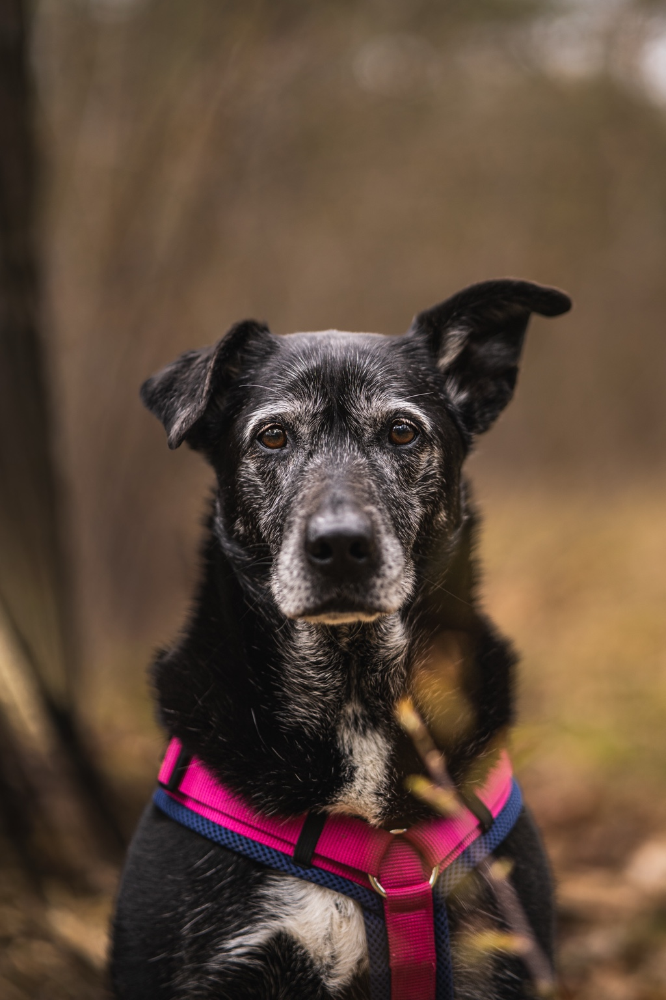
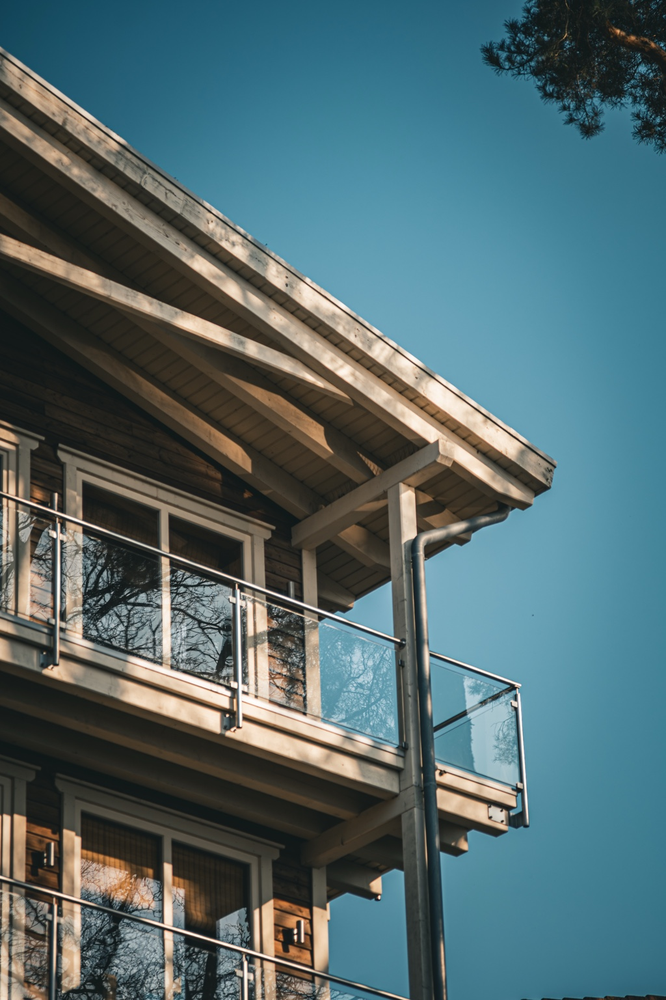
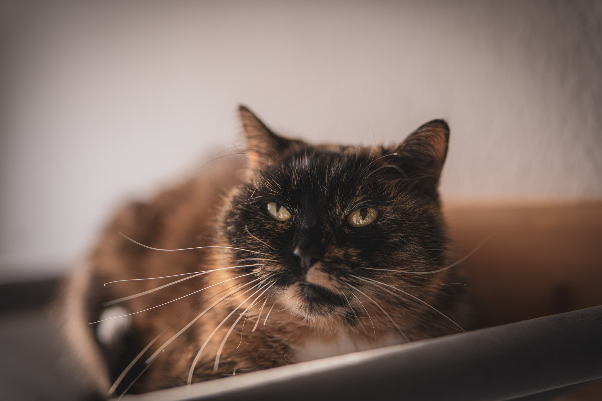
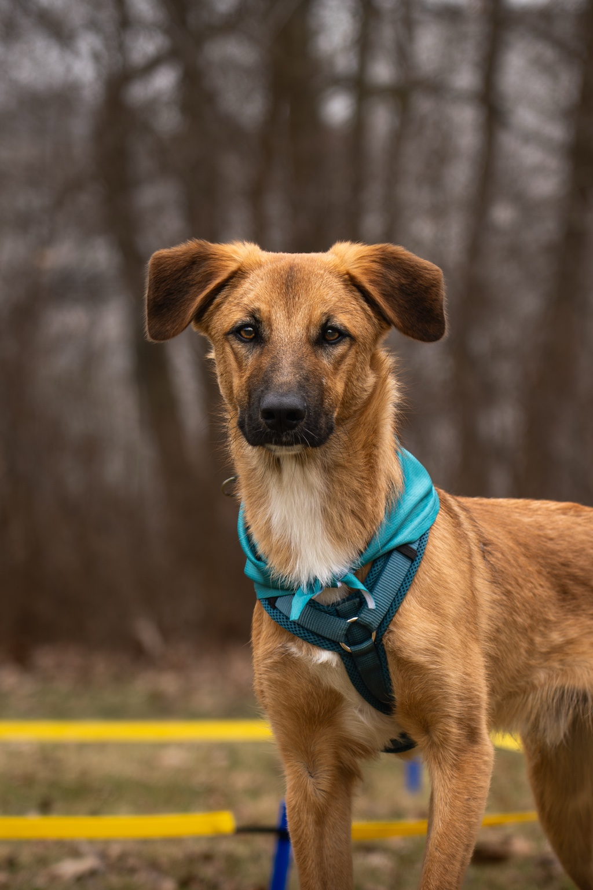
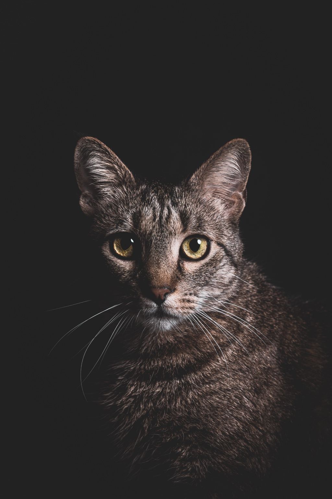
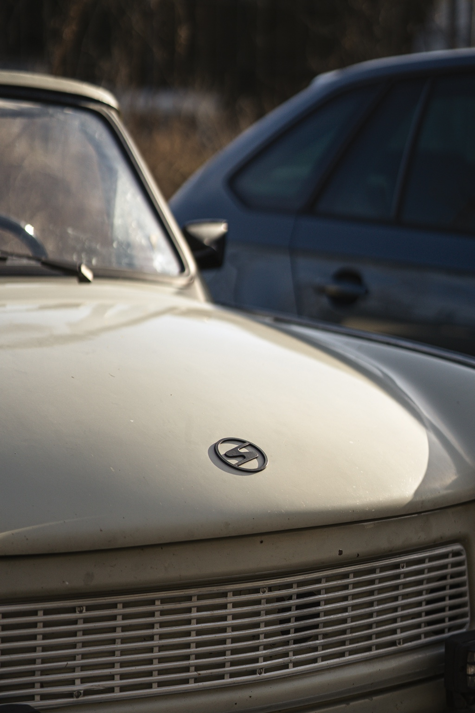
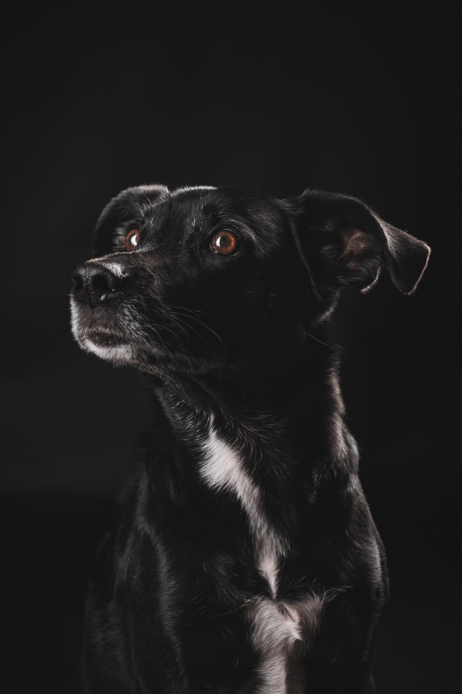
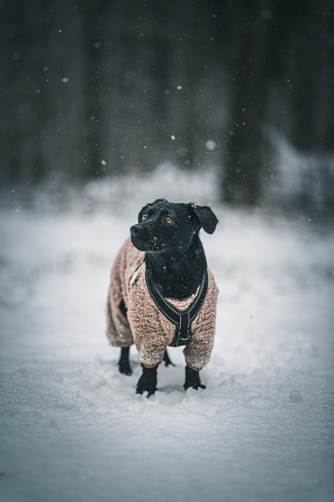

PORTFOLIO · 01
Hunde &
Tiere.
Charakter, Ausdruck und echte Momente – natürliche Tierfotografie mit Gefühl.
GALERIE
Persönlichkeiten
auf vier Pfoten.
Eine Auswahl der bisherigen Tierarbeiten. Die Galerie kann später jederzeit um deine besten Instagram-Arbeiten erweitert werden.







DU MÖCHTEST DEINEN HUND FOTOGRAFIEREN LASSEN?
Dann lass uns losziehen.
Schreib mir und wir finden gemeinsam eine passende Location und einen Termin.
Anfrage stellen →